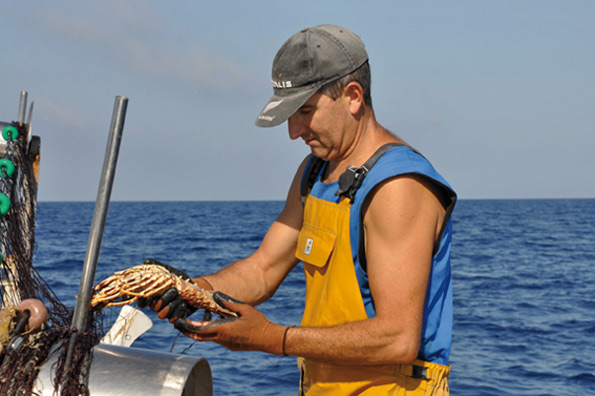

Il mare, sempre il mare
Una delle canzoni popolari minorchine dice che nell'isola suona costantemente la canzone del mare e del vento. Il fatto é che Minorca non si capisce senza la tramontana e senza le sue spiagge. Il mare é stato generoso con questo pezzetto di terra, caratterizzando 216 kilometri di un litorale che nasconde perle di diverse opportunitá, mostrando due facce diverse.
Nel sud, le cale offrono al visitante un manto di sabbia bianca e fine, baciato da acque cristalline e turchesi. Molte di queste spiagge coincidono con l'estuario di piccoli fiumi che scendono da canaloni naturali che attraversano l'isola, e per questo il paesaggio si mostra pianeggiante e degradante. Scenari idilliaci nei quali godere del mare, la brezza ed il sole. Senza preoccupazioni, senza stress. Lasciarsi toccare dal mare, accarezzare dal sole e semplicemente godendosi l'attimo.
Nel nord, il litorale si mostra piú selvaggio. Scolpite dalla forza del vento e delle onde, le cale settentrionali combinano il turchese dell'acqua con il marrone rame della pietra argillosa. Non temete, sono spiagge comode, di grande bellezza, nelle quali si entra in simbiosi con la natura vergine e sincera.
I minorchini non concepiscono la vita senza il mare, sanno prendere dal mediterraneo i migliori frutti con delicatezza e cura. Non perdete l'occasione di provare il gambero rosso dell'isola, l'eccelso cap-roig e lasciatevi sedurre dall'aragosta, il prodotto stella della gastronomia minorchina. E se siete amanti della subacquea, immergetevi e meravigliatevi con il manto marino minorchino. Non vi deluderá.